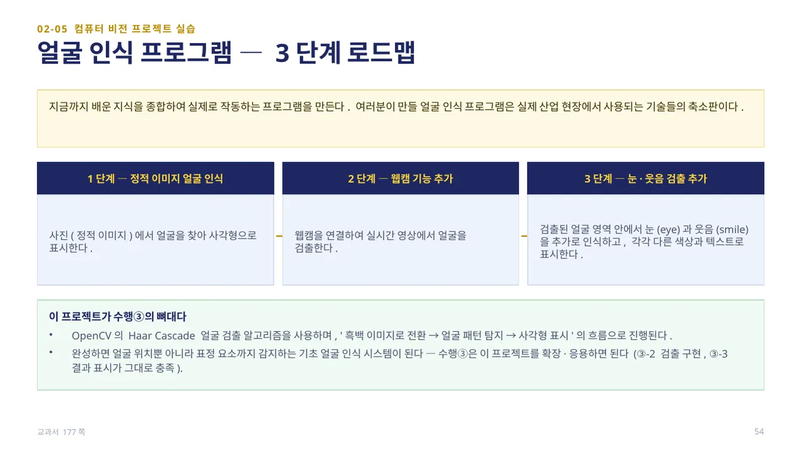
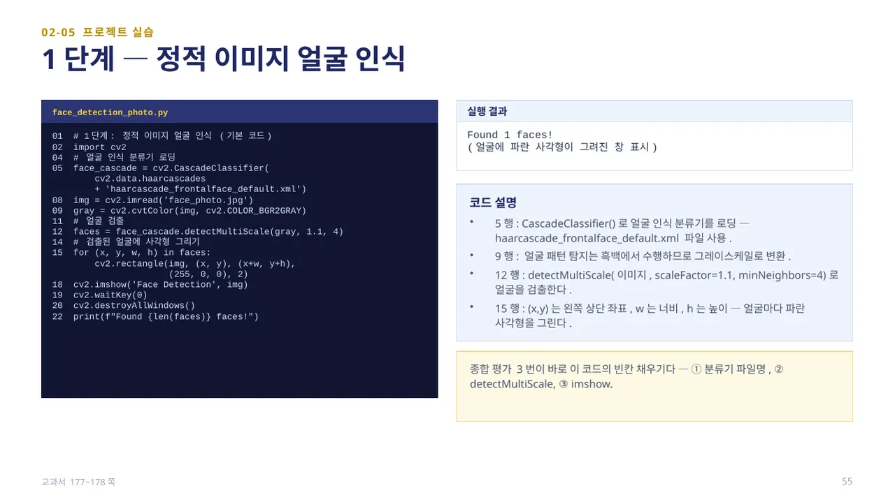
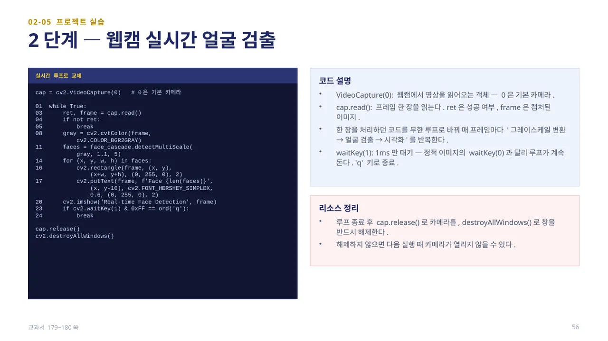
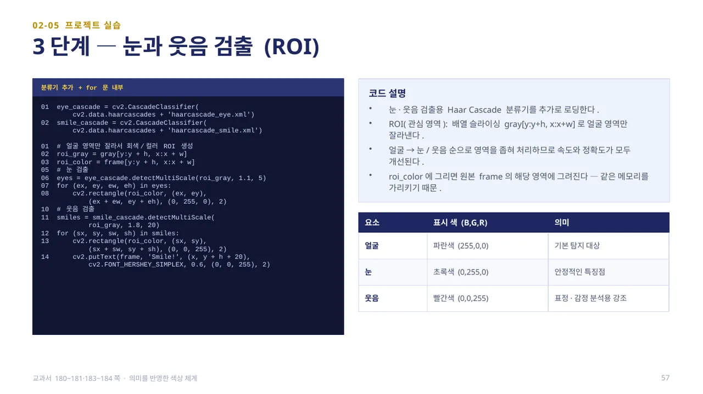
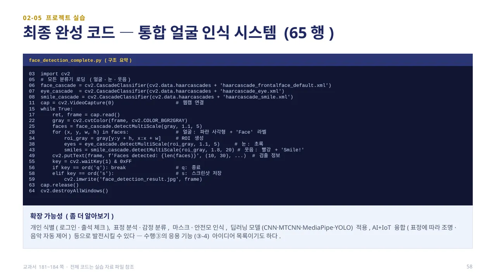
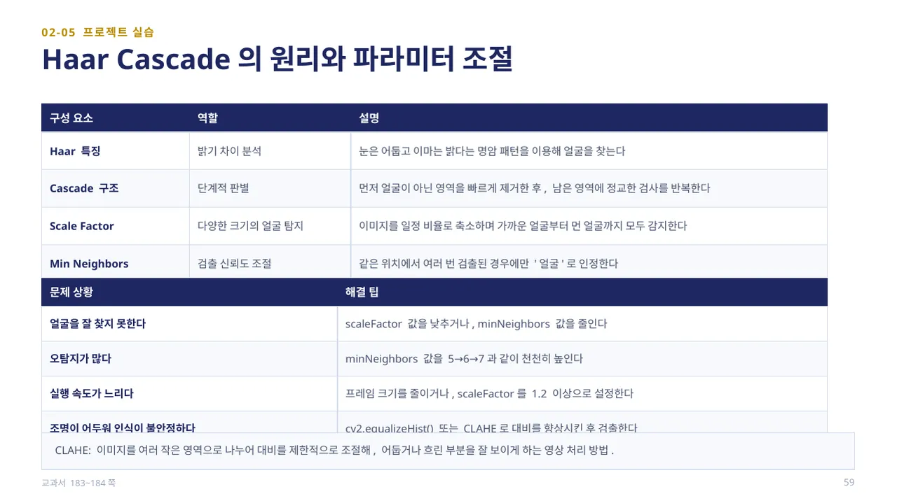

중단원 02. 컴퓨터 비전 라이브러리 활용 · 147–193쪽 소단원 05. 컴퓨터 비전 프로젝트 실습· 177–191쪽
이 웹 주제의 연계 범위: 177–184쪽
교과서 177–184쪽
얼굴·눈·웃음 검출과 웹캠
얼굴의 위치를 찾는 것과 누구인지 아는 것은 달라요.

지금까지 배운 지식을 종합해 실제로 작동하는 프로그램을 만듭니다. 여러분이 만들 얼굴 인식 프로그램은 실제 산업 현장에서 사용되는 기술들의 축소판입니다. 1단계는 사진(정적 이미지)에서 얼굴을 찾아 사각형으로 표시하고, 2단계는 웹캠을 연결해 실시간 영상에서 얼굴을 검출하며, 3단계는 검출된 얼굴 영역 안에서 눈(eye)과 웃음(smile)을 추가로 인식해 각각 다른 색상과 텍스트로 표시합니다.
OpenCV의 Haar Cascade 얼굴 검출 알고리즘을 사용하며, ‘흑백 이미지로 전환 → 얼굴 패턴 탐지 → 사각형 표시’의 흐름으로 진행됩니다. 이 프로젝트는 수행③(컴퓨터 비전 응용 프로그램 만들기)의 뼈대이기도 합니다 — 검출 구현과 결과 표시 항목이 그대로 충족됩니다. (교과서 177쪽)

face_detection_photo.py — 5행cv2.CascadeClassifier(cv2.data.haarcascades + ‘haarcascade_frontalface_default.xml’)로 얼굴 인식 분류기를 로딩합니다. 9행에서 얼굴 패턴 탐지는 흑백에서 수행하므로 그레이스케일로 변환하고, 12행face_cascade.detectMultiScale(gray, 1.1, 4)로 얼굴을 검출합니다.
15행for (x, y, w, h) in faces:에서 (x, y)는 왼쪽 상단 좌표, w는 너비, h는 높이이며, 얼굴마다 파란 사각형을 그립니다. 실행 결과 Found 1 faces!처럼 검출된 얼굴 수가 출력됩니다. (교과서 177~178쪽)

한 장을 처리하던 코드를 cap = cv2.VideoCapture(0)(0은 기본 카메라)과 무한 루프로 바꿔 매 프레임마다 ‘그레이스케일 변환 → 얼굴 검출 → 시각화’를 반복합니다. ret, frame = cap.read()에서 ret은 성공 여부, frame은 캡처된 이미지입니다.
cv2.waitKey(1)은 1ms만 대기합니다 — 정적 이미지의 waitKey(0)과 달리 루프가 계속 돌며, ‘q’ 키로 종료합니다. 루프 종료 후 cap.release()로 카메라를, cv2.destroyAllWindows()로 창을 반드시 해제해야 합니다 — 해제하지 않으면 다음 실행 때 카메라가 열리지 않을 수 있습니다. 정적 → 실시간의 차이는 ‘루프 + waitKey(1)’뿐으로, 구조 변화가 크지 않습니다. (교과서 179~180쪽)

눈·웃음 검출용 Haar Cascade 분류기(haarcascade_eye.xml, haarcascade_smile.xml)를 추가로 로딩합니다. ROI(관심 영역)는 배열 슬라이싱 gray[y:y+h, x:x+w]로 얼굴 영역만 잘라낸 것으로, 얼굴 → 눈/웃음 순으로 영역을 좁혀 처리하므로 속도와 정확도가 모두 개선됩니다. roi_color에 그리면 원본 frame의 해당 영역에 그려집니다 — 같은 메모리를 가리키기 때문입니다.
색상 체계에도 의미가 담겨 있습니다 — 얼굴은 파란색(255,0,0, 기본 탐지 대상), 눈은 초록색(0,255,0, 안정적인 특징점), 웃음은 빨간색(0,0,255, 표정·감정 분석용 강조)입니다. (교과서 180~181·183~184쪽)

face_detection_complete.py(65행)는 얼굴·눈·웃음 분류기를 모두 로딩하고, 웹캠 루프 안에서 얼굴을 검출한 뒤 각 얼굴의 ROI에서 눈·웃음을 검출해 표시합니다. 화면 왼쪽 위에는 cv2.putText()로 ‘Faces detected: N’처럼 검출 정보를 표시합니다. 키 입력은 ‘q’로 종료, ‘s’로 cv2.imwrite(‘face_detection_result.jpg’, frame) 스크린샷 저장을 처리합니다 — 이 스크린샷 기능이 수행③ 제출물(실행 결과 캡처 2장)과 바로 연결됩니다.
이 구조는 개인 식별(로그인·출석 체크), 표정 분석·감정 분류, 마스크·안전모 인식, 딥러닝 모델(CNN·MTCNN·MediaPipe·YOLO) 적용, AI+IoT 융합(표정에 따라 조명·음악 자동 제어) 등으로 확장할 수 있습니다 — 수행③ 응용 기능 아이디어로도 좋습니다. (교과서 181~184쪽)

Haar 특징은 눈은 어둡고 이마는 밝다는 명암 패턴을 이용해 얼굴을 찾고, Cascade 구조는 얼굴이 아닌 영역을 먼저 빠르게 제거한 뒤 남은 영역에 정교한 검사를 반복하는 단계적 판별 방식입니다. Scale Factor는 이미지를 일정 비율로 축소하며 다양한 크기의 얼굴을 탐지하고, Min Neighbors는 같은 위치에서 여러 번 검출된 경우에만 ‘얼굴’로 인정해 검출 신뢰도를 조절합니다.
얼굴을 잘 찾지 못하면 scaleFactor를 낮추거나 minNeighbors를 줄이고, 오탐지가 많으면 minNeighbors를 5→6→7처럼 천천히 높입니다. 실행 속도가 느리면 프레임 크기를 줄이거나 scaleFactor를 1.2 이상으로 설정하고, 조명이 어두워 불안정하면 cv2.equalizeHist() 또는 CLAHE(영역별로 대비를 제한적으로 조절해 어둡거나 흐린 부분을 잘 보이게 하는 방법)로 대비를 향상시킨 후 검출합니다. (교과서 183~184쪽)
 인공지능 파이썬 실무
인공지능 파이썬 실무